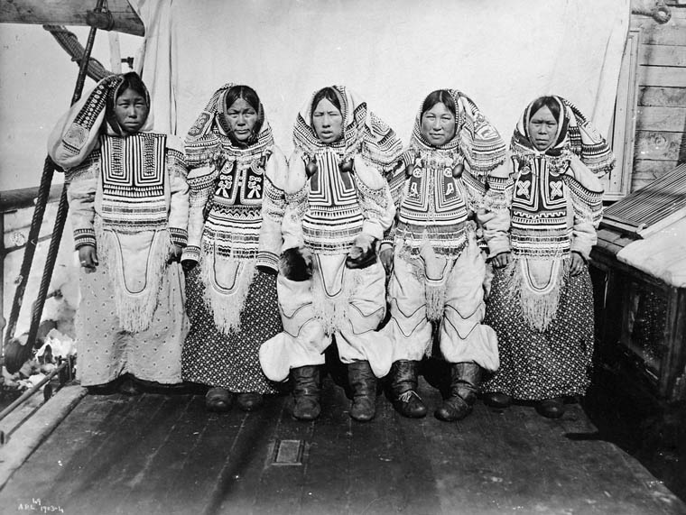

The chart to the left shows the proportion of the Canadian population that indentifies as Indigenous. As shown, a large majority of the population does not identify with an Indigenous group. From the Indigenous groups, the First Nations make up a larger percent of the Indigenous population in Canada. Less than 2% of the population are Métis, and an even smaller percentage are Inuit. With such a small percentage of Canadians that indentify as Indigenous, it raises the question of how this group and their traditions can be protected and preserved.
This choropleth map represents the distribution of three types of indigenous populations in Canada. The map shows the percent Indigenous and the counts for First Nations, Inuit, and Métis populations for each province and territory. The colors in the map vary in lightness based on the percentage of indigenous individuals in each province/territory.
There is a relationship between the self-reported mental health variable on the x-axis and the clinically diagnosed mood disorder by a medical professional variable on the y-axis. Based on the indigenous vs non-indigenous populations, the self-assessed mental health correlates with the diagnosed mood disorder where the gray non-indigenous have a lower crude rate (below 15% in both sexes) and the other values of indigenous populations have a high crude rate of both variables (varying from 5% to 25% in both sexes). There is also an overall trend of females having a higher crude rate of mood disorder and mental health than males do in both populations of indigenous and non-indigenous. The interactivity does add to this visualization because there are so many variables - females, males, geography, domain, mental health, and mood disorder that are portrayed in one graph. The interactivity does align with Doumont’s talk in terms of what he says because there is a minimized signal to noise ratio in this graph, and each label has a purpose to the values and variables on the graph.